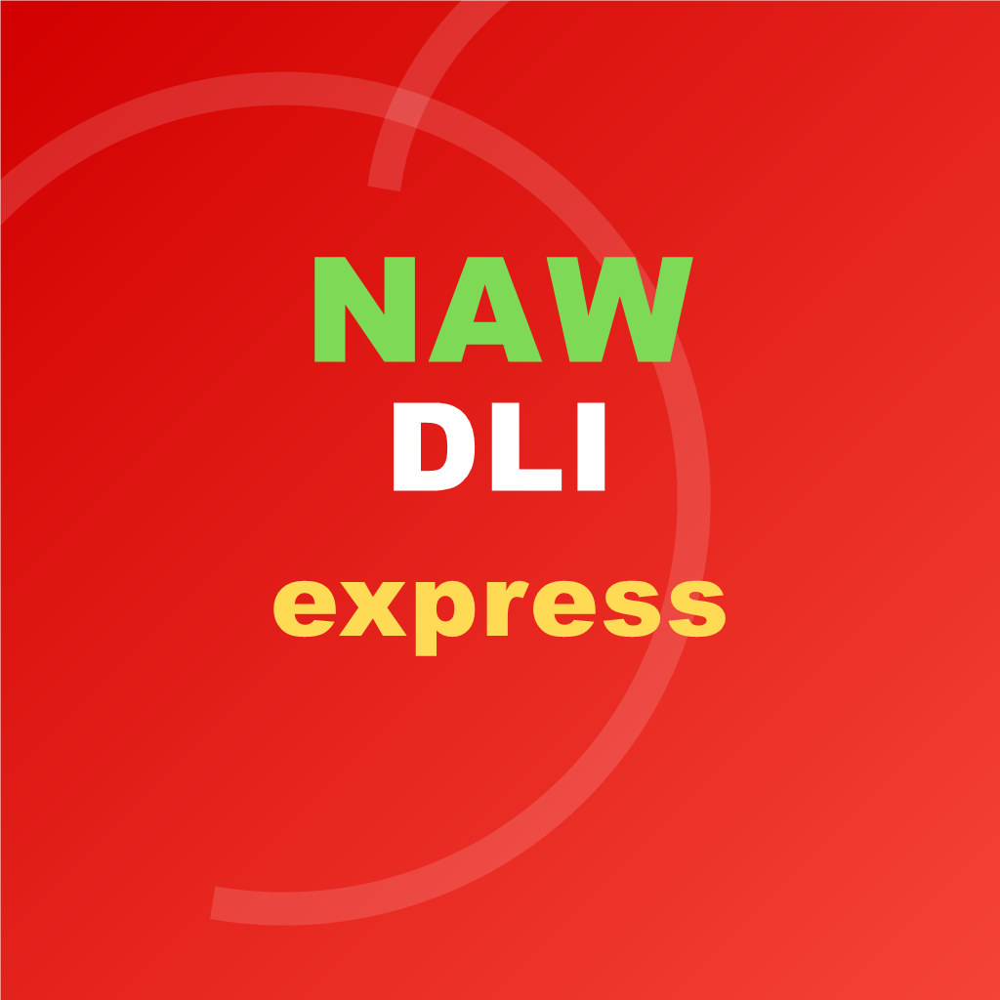

طلبات متعددة الفئات
مطاعم، بقالات، خضار، كنكاري وسائقون في تجربة واحدة.

Nawdli Express تحميل APKالتحميل الرسمي خارج Google Play
منصة واحدة للطلبات والتوصيل تربط الزبون بالمطاعم والبقالات والخضار والكنكاري والسائقين بسرعة ووضوح.
تحميل مباشر
زر تحميل واضح، معلومات الإصدار، وتحذير أمان يساعد المستخدم على تثبيت ملف APK بثقة.
اختر نسخة APK المناسبة لهاتفك. إذا لم تعمل نسخة، جرّب النسخة الأخرى من القائمة.
مبني لطبيعة التطبيق
الموقع يشرح فكرة التطبيق للزبون والتاجر والسائق، مع إبقاء التركيز على التحميل الآمن.
مطاعم، بقالات، خضار، كنكاري وسائقون في تجربة واحدة.
واجهة مناسبة لإبراز حالة الطلب من القبول حتى التسليم.
صفحة مخصصة لمن لا يريد أو لا يستطيع النشر على Google Play الآن.
تعليمات واضحة للمستخدم عند تثبيت APK من مصدر خارجي.
الإصدارات
اختر النسخة المناسبة لهاتفك من ملفات التطبيق الرسمية المتاحة للتحميل.
طريقة التثبيت
هذه التعليمات تقلل ارتباك المستخدم عند ظهور تحذير تثبيت التطبيقات من خارج المتجر.
اضغط زر تحميل APK وانتظر حتى يكتمل التنزيل.
من الإشعار أو مدير الملفات، افتح ملف Nawdli Express.
إذا ظهرت رسالة أمان، فعّل السماح لهذا المصدر مرة واحدة.
افتح التطبيق وأنشئ حسابك حسب نوع المستخدم.
أسئلة شائعة
نعم، هذه الصفحة مخصصة للتحميل الرسمي من Nawdli Express.
الهدف الحالي هو توفير التطبيق مباشرة للمستخدمين حتى يصبح النشر على المتجر ممكنًا.